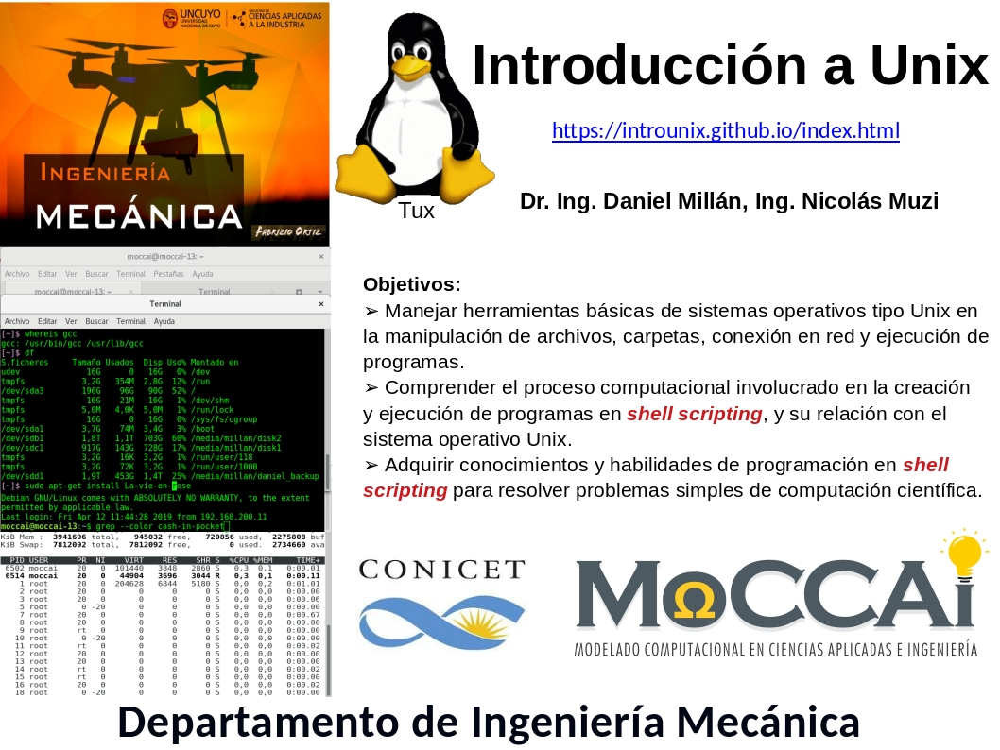

Introducción a UNIX
Este curso está orientado a estudiantes de Ingeniería Mecánica de la FCAI-UNCuyo, aunque pueden tomarlo estudiantes de otras carreras de ingeniería, que desean adquirir conocimientos y habilidades de programación básica en el empleo de SO tipo UNIX.
Fechas y Horarios
- Fecha de inicio: lunes 21 de marzo.
- Fecha de finalización: fines de abril, entrega de guías de problemas y Trabajo Integrador.
- Duración: 30 hs para carreras de grado (6 semanas acorde a programa).
- Se cursará en los horarios
- días lunes de 16:00-18:00hs, clases teóricas,
- días viernes de 15-18hs, prácticas de laboratorio,
- los horarios de las consultas de prácticas se definirán durante la primer semana.
- Las clases se impartirán en el aula 2, en éstas se expondrán los conceptos teóricos y se resolverán ejemplos concretos, además se llevarán a cabo la resolución de guías de problemas. Los alumnos deben traer celular Android (instalar termux y hacker's keyboard), y/o laptop con Linux o cygwin.
Herramientas
- En Clases se irán colgando los apuntes de las diferentes unidades, así como cualquier otro material referente a los contenidos.
- En Prácticas se ubicarán las guías de Trabajos Prácticos donde se detallan los ejercicios que deben ser entregados de forma obligatoria.
- En Biblio pueden encontrar material para conocer más detalles de como trabajar en UNIX.
- En Curso 2017 se pueden encontrar las clases, guías de problemas del curso de UNIX impartido en 2017.
- En Curso 2019 se pueden encontrar las clases, guías de problemas del curso de UNIX impartido en 2019.
Equipo Docente
- Nos encuentran principalmente durante la mañana en la oficina/aula 40 (tercer piso – posgraduación).
- Grupo de Modelado Computacional en Ciencias Aplicadas e Ingeniería (MoCCAI).
Dr. Ing. Daniel Millán (responsable - Web Personal)
- Inv. Independiente CONICET y Prof. Titular FCAI - Dpto. Ing. Mecánica.
- dmillan@fcai.uncu.edu.ar
Ing. Nicolás Muzi
- Responsable de Prácticas de Laboratorio.
- Becario CONICET y JTP Matemática IV - Dpto. Física y Matemática.
- nmuzi@fcai.uncu.edu.ar Web Personal.
Brando Martinelli
- Tutor Alumno de Prácticas de Laboratorio.
- Estudiante FCAI - Ingeniería Mecánica.
Rodrigo Bautista
- Tutor Alumno de Prácticas de Laboratorio.
- Estudiante FCAI - Ingeniería Mecánica.
Comentarios y recomendaciones

- Frustrarse es típico y temporal.
- La curva de aprendizaje vs contenido del curso es sigmoide.
- Persistencia y dedicación ¡Kovalski!
Créditos
Esta web está construida con Jekyll + Reveal.js (este último de Hakim El Hattab), y está fuertemente basado en el Tutorial de purrr de Jenny Brian. El código fuente de esta página está en disponible en Github, que hace a su vez de host del sitio a través de su servicio Github Pages. Además de nuestros aportes propios!.